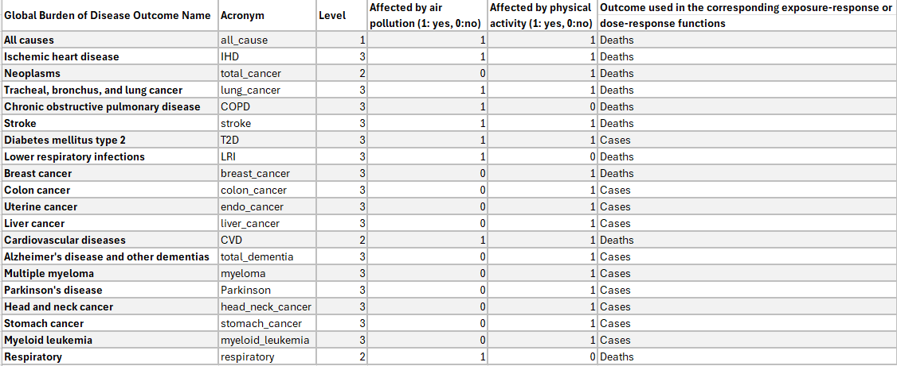

Development of the Integrated Transport and Health Impact Modelling Tool (ITHIM) in R, also known as ITHIM version 3.0. Started in January 2018. This document aims to be a comprehensive record of the calculations in the ITHIM pipeline, specifically the ITHIM- R package.
How to use the package
We have written a how-to guide that explains how to install the ITHIM-R package, how to run the ITHIM-Global model using this package and how to produce summaries of the key results. Please read it here: how to run ITHIM?.
Citation
To cite package ‘ithimr’ in publications use:
Ali Abbas, Anna Schroeder et al. (2023). ithimr: Integrated Transport and Health Impact Model. R package version 0.1.2.
A BibTeX entry for LaTeX users is
@Manual{, title = {ithimr: Integrated Transport and Health Impact Model}, author = {Ali Abbas, Anna Schroeder et. al}, year = {2023}, note = {R package version 0.1.2, https://github.com/ITHIM/ITHIM-R}, url = {https://ithim.github.io/ITHIM-R/}, }
Outline
ITHIM performs integrated assessments of the health impacts of user-defined transport scenarios and policies at urban and national levels. The health impacts of transport policies are modelled through changes in physical activity, road traffic injury risk, exposure to fine particulate matter (PM2.5) air pollution. In addition, the model estimates changes in CO2 emissions. ITHIM is used by researchers and health and transport professionals to estimate the health impacts of scenarios, to compare the impacts of travel patterns in different locations, and to model the impacts of interventions. ITHIM works either as a stand-alone model or can be linked to other models (e.g. transport, health, economic) and is a quasi-microsimulation model where exposure is at the individual person level, while health impacts are estimated for aggregated age groups, constrained by available Global Burden Disease (GBD) data.
Physical Activity
ITHIM models exposure to physical activity by comparing distributions of weekly physical activity under different scenarios. Walking, cycling and other types of physical activity are combined as marginal MET hours per week of activity. Outcomes affected by physical activity include several cardiovascular diseases, depression, dementia, diabetes, breast cancer and colon cancer. ITHIM also models changes in health through all-cause mortality. A comparative risk assessment method is used to estimate how changes in population physical activity lead to changes in health burden.
Road Traffic Injuries
Road traffic injuries are modelled using a model based on risk, distance and speed. Differences in risk by sex and age are also taken into account. This approach allows ITHIM to look at how the absolute number of injuries and the risk of injury might change for different modes of transport as travel distances between modes change.
Air Pollution
Fine particulate matter (PM2.5) air pollution risks are calculated for the general population (background rates) as well as travellers using mode specific rates for different transport modes. Inhalation rates and assumptions about time use are used to calculate PM2.5 dose across different travel and non-travel activities. Exposure changes for the population are based on a comparison of locally generated PM2.5 emissions and concentrations in the study area.
CO2 Emissions
The carbon dioxide (CO2) pathway models carbon dioxide (CO2) emissions from motorised vehicles. The CO2 pathway estimates a single metric: the total CO2 emissions for each modelled scenario. The method to calculate CO2 emissions is similar to the one for PM2.5.
Health Outcomes
The health impacts in ITHIM are presented as years of life lost (YLL) and number of attributable deaths seperately for each pathway, in addition to accounting for the interaction between physical activity and air pollution. Background mortality and YLL data for the study areas are estimated from Global Burden of Disease studies.

Data inputs
ITHIM-R requires 5 user defined input files in csv format, saved in a directory with the city’s name. See inst/ext/local/bogota for example files. There are also numerous assumptions which the user can parameterize in the model.
This section talks about all the files (datasets) required to setup and run the model. There are two subsections, which are:
City-specific files (local input parameters/datasets).
Global files (global input parameters/datasets).
City-specific files
This section covers file inputs (specific to a city) required to run the model.
-
Travel survey (example trips dataset). A table of all trips taken by a group of people on a given weekday. It also includes people who take no trips.
- One row per trip (or stage of trip).
- Minimal columns:
participant_id,age,sex,trip_mode,trip_duration(ortrip_distance). - Other columns:
stage_mode,stage_duration(orstage_distance).
-
Injury events (example injuries dataset). A table of recorded road-traffic injury (fatality) events in a city in one or more years.
- One row per event.
- Minimal columns: victim mode (
cas_mode) and strike mode (strike_mode). - Other columns:
year,cas_age,cas_gender,weight(e.g. multiple years combined).
-
Baseline mortality and years of life lost data (example burden dataset).
- One row per health outcome/metric/age/gender combination.
- Minimal rows:
Measure(death/YLL);sex_name(Male/Female);age_name(‘x to y’);cause_name(cause of mortality or YLL);val(value of burden);population(number of peoplevalcorresponds to, e.g. population of country).
-
Population of city (example population dataset). This is used in order to scale the baseline mortality and YLL data from the country’s values to the city’s population under study.
- One row per demographic group.
- Columns:
sex,age,population. -
agecolumn should share boundaries withage_namein baseline mortality and YLL data, but can be more aggregated.
-
Physical activity survey (example physical activity dataset)
- One row per person.
- Columns:
sex,age,ltpa_marg_met(total non-occupational PA in a week).
Global files
In order to setup the model, we need a fixed list of tables/datasets, which do not change across cities/ applied similarly to all cities and are hence referred to as “Global”, such as:
Health outcome interaction table. A table with a list of health outcomes related to a specific pathway such as
Air PollutionandPhysical Activityand also the interaction between them.
Air Pollution Exposure Response Functions (ERFs). These give the exposure-response relationships between air pollution (PM2.5) and its impact on health for different health outcomes. We have collected/cleaned datasets from published studies for this.
Physical Activity Dose-Response Functions (DRFs). These are dose-response relationships of physical activity and its impact on health for different health outcomes. Similar to air pollution, this too comes from published studies. This now sits in an independent R package called
drpa.
How to run the model?
For setup, reading all the required datasets and initialising all variables, we call run_ithim_setup() and to run the model, we call run_ithim(). The function used to call both run_ithim_setup and run_ithim is the multi_city_script which also reads in the relevant input parameter files.